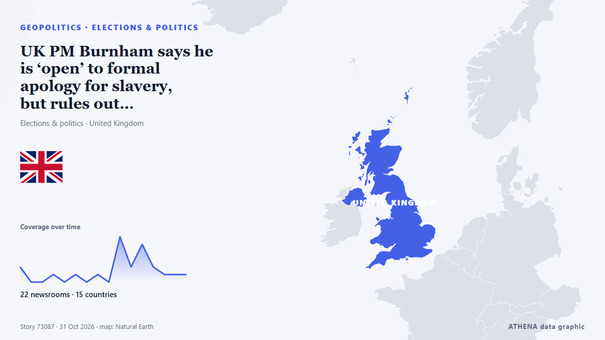

الانتخابات والسياسة
| 18 أكتوبر | 1 |
|---|---|
| 19 أكتوبر | 0 |
| 20 أكتوبر | 1 |
| 21 أكتوبر | 1 |
| 22 أكتوبر | 3 |
| 23 أكتوبر | 4 |
| 24 أكتوبر | 2 |
| 25 أكتوبر | 1 |
| 26 أكتوبر | 4 |
| 27 أكتوبر | 5 |
| 28 أكتوبر | 1 |
| 29 أكتوبر | 0 |
| 30 أكتوبر | 0 |
| 31 أكتوبر | 1 |
تُعرض العناوين بالإنجليزية كما نُشرت.

UK PM Burnham says he is ‘open’ to formal apology for slavery, but rules out reparations
At least 12.5 million Africans were abducted and sold into slavery. من Express Tribune
What Maria Corina Machado’s return to Venezuela means for its democratic transition
CARACAS, Oct 23 - The Venezuelan opposition movement headed by Nobel Peace Prize laureate Maria Corina Machado is preparing for eventual elections, including a new effort to boost voter registration… من The Straits Times
Trump administration bolsters bid to block Alaska Senate certification
President Donald Trump’s administration filed a revised lawsuit on Thursday seeking to block Alaska’s election results if Republican incumbent Dan Sullivan loses narrowly and issued more than 40… من FBC News
UN votes overwhelmingly against US embargo on Cuba
The UN General Assembly on Wednesday adopted a resolution calling for an end to the decades-old US embargo on Cuba. من CGTN (World)
Student Movement Brings the Vucic Era to an End in Serbia, Even in the Eyes of the OSCE and the oiip
Sunday’s vote could reshape the country’s political future. من EUobserver
Trump says Brazil election looked rigged
US President Donald Trump said Monday that leftist incumbent Luiz Inacio Lula da Silva's surprise win in Brazil's presidential vote "looked like another rigged election," although the party of… من Korea Herald
Eisenkot, Netanyahu’s Main Rival in Israel’s Election, Faces a Dilemma
If Eisenkot beats Netanyahu, he will need extraordinary political skill to form a coalition – and face challenges greater than any prime minister before him, even Rabin. من Haaretz (English)
US To Grant Flavio Bolsonaro Visas After Brazil Election Loss
Brother Eduardo welcomes him in Miami, Brazilian media reports, as US confirms visas for Bolsonaro and his family. من Anadolu Agency (English)
Netanyahu bloc leads Israeli election count with projected 57 seats, short of majority after nearly 42% of votes counted
Eisenkot's opposition bloc projected to win 47 seats, while Arab parties could hold balance of power with 16 seats. من Anadolu Agency (English)
Germany news: Chancellor Friedrich Merz accuses North Korea of threatening Europe's freedom
Friedrich Merz, who is visiting Seoul, said North Korea is putting Europe's security at risk by sending soldiers to fight for Russia in Ukraine. من DW English
Vucic concedes defeat in Serbian election
Student-backed list projected to secure 139 seats against 104 for Vucic’s coalition; thousands celebrate across Serbia as Socialist Party faces possible parliamentary exit. من Anadolu Agency (English)
Trump, Obama trade barbs in final week before US midterm elections
WASHINGTON, United States (AFP) — Former United States (US) president Barack Obama delivered a scathing critique of his successor, Donald Trump, at a rally Saturday in Ohio to support Democratic… من Jamaica Observer
Flavio Bolsonaro flees Brazil through Argentina and lands in Miami
According to a report by Folha de S.Paulo, the politician was dissuaded from seeking to challenge the voting legitimacy by his lawyers and key allies. من TASS (English)
Israeli exit polls show deadlock, setback for Netanyahu
The vote drew a near-record turnout of 77.7 per cent, as Israelis passed wartime judgment on Prime Minister Benjamin Netanyahu in the first election since the Hamas-led attacks of Oct 7, 2023. من CNA (Channel NewsAsia)
Flavio Bolsonaro on way to Ecuador from Argentina after fleeing Brazil
Defeated right-wing presidential candidate Flavio Bolsonaro was on his way to Ecuador after fleeing Brazil, Argentina's government said on Wednesday, October 28. من France 24 English
Netanyahu faces voters in Israel's first election since October 2023 attacks
Israelis will vote Tuesday in the country’s first national election since Hamas’ October 7, 2023, attack, with Prime Minister Benjamin Netanyahu’s leadership, national security and the country’s… من Africanews (English)
Polls open as Israelis vote in tense election seen as a referendum on Netanyahu
Thousands of Israelis are traveling back to their country to vote in a consequential election, that has Prime Minister Netanyahu's power hanging in the balance. من NBC News (World)
Voter turnout highest since 1973 as of 2pm
Showers are expected on Election Day, but turnout figures going back to 1949 show that the weather has never decided who shows up at the ballot box. من The Jerusalem Post
Defeated Brazilian presidential candidate Flavio Bolsonaro lands in Miami
Corruption is a major concern for Brazilian voters ahead of the runoff between Flávio Bolsonaro and Luiz Inácio Lula da Silva on October 25. من ABC News (International)